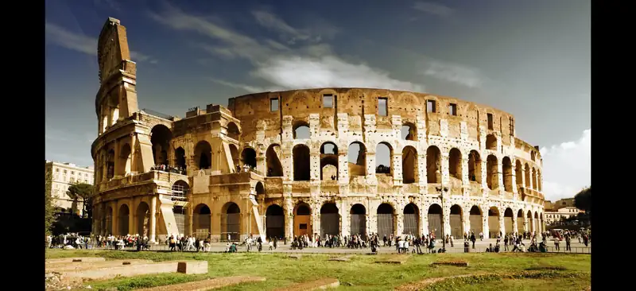
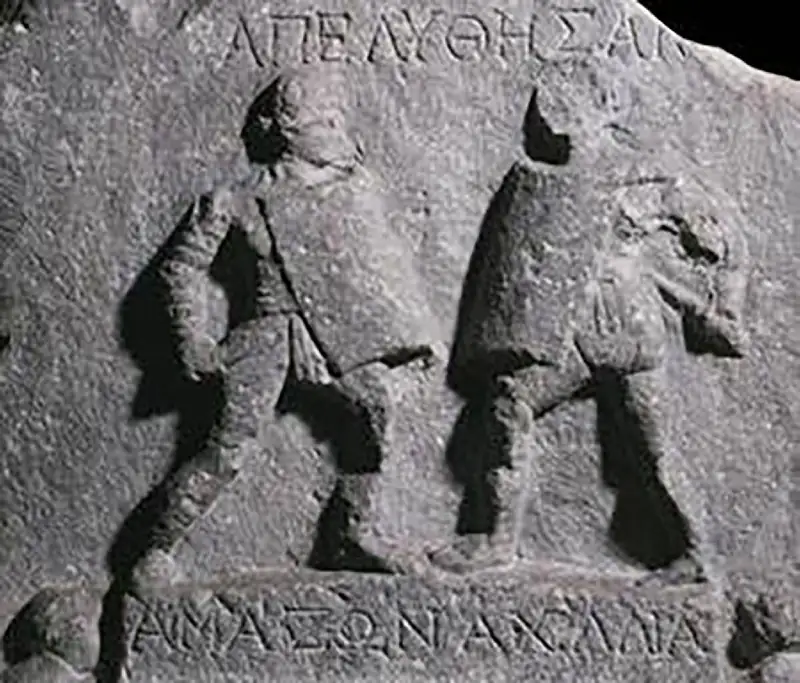
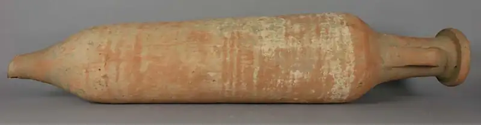
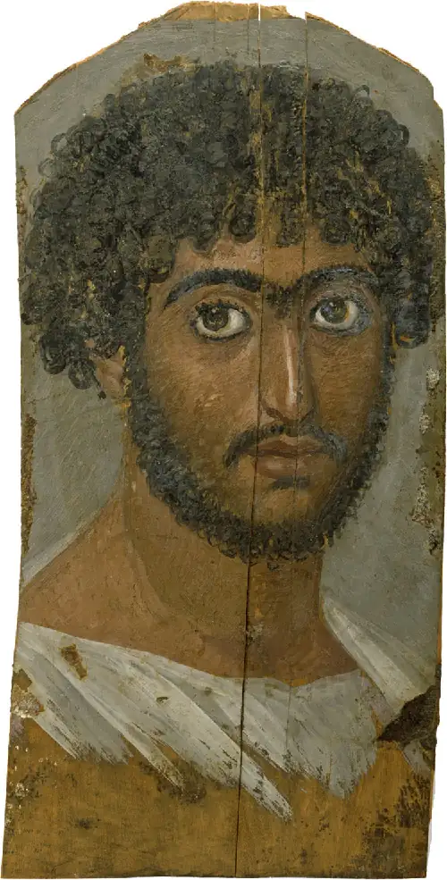

Chapter 7: Experiencing the Roman Empire¶
Introduction¶

The ancient city of Rome gave its name to an empire that stretched from Britain to the Arabian Peninsula. While political life was centered in the city of Rome—the seat of the Senate and of the emperor—“Rome” came to represent a much broader geographic expanse. From the second century BCE to the third century CE, Rome’s magnitude was reflected in the diversity of experiences of all those who lived within the empire’s borders, not just those who lived in the shadow of the great Colosseum (Figure 7.1).
Rome was a patriarchal society that achieved success through military dominance, patriotism, and respect for authority. Romans prided themselves on the status and reputation they achieved through military or political service, as well as through their claims of noble ancestors. This arrangement largely benefited upper-class Roman men, while others struggled to navigate the system and were subject to domination by the elite. Roman women and enslaved people were held to restrictive cultural standards for their behavior, though many were able to overcome these and hold real influence in Roman society. The complexity of daily life in Rome is key to understanding the way the empire functioned and flourished at its height.
![A map of the world is shown, land highlighted in white and water in blue. A white line runs through the middle of the map. Land bordering the Mediterranean Sea is highlighted orange. In Europe this includes all of Spain, Portugal, France, the southern portion of England, Italy, Croatia, Serbia, Bulgaria, and Greece. In the Middle East this includes Turkey, Syria, Iraq, Lebanon, Jerusalem, and Israel. The northern coastal areas of Egypt, Libya, Tunisia, Algiers, and Morocco are highlighted in Africa.](img/osx-worldhist-a07-00-m-locatormap.webp)
7.1 The Daily Life of a Roman Family¶
Learning Objectives
By the end of this section, you will be able to:
- Describe a typical Roman home
- Discuss gender roles in Roman families
- Analyze the influence of social class on daily life in Rome
The family was an important element of life during the Roman Empire. The male patriarch was the head of the household, which consisted of the immediate and extended family, as well as adjacent groups, including dependents and enslaved people. While men held ultimate authority in the family, women were also expected to maintain family order, with responsibilities in and often outside the household. Pride in a family’s prosperity was a crucial Roman value, which motivated both the honoring of ancestors and the securing of a future for descendants. Romans looked to their ancestors for examples of correct moral behavior and worked diligently for the family’s continuing stability.
The Structure of Roman Families¶
Family life was oriented around the paterfamilias, the male head of the household. According to tradition, this patriarch had the power of life and death over all his dependents, an authority referred to as patria potestas (“paternal power”). Members of the extended family subject to this authority included the patriarch’s wife, their children, anyone descended through the family’s male line, and all enslaved people belonging to the household. With his authority, the patriarch was both the judge and rule maker of the family, with the power to sell his dependents into bondage or destroy their property (Figure 7.3).
![An image of a richly, colorful painting is shown. In the image, a man in silver chest armor with a red string across, long mustard colored cloak draped over his shoulders and knees, short curly hair and red socked boots with gold trim sits on a blue colored throne on stone steps. A sword hangs at his left side and he holds a short dagger in his right hand against his knee. A soldier in silver chest armor and helmet holding a shield is sitting on the floor next to the throne and a man in a green cloth and curly hair peeks out from behind the blue throne. Behind the throne a thin stone wall shows with two round columns on either side with a dark curtain draped across the top with a tassel hanging down on one side. On either side of the wall can be seen a dark rolling sky along with various shaped off-white buildings on the left. In the left forefront eleven men stand while some sit or squat on the ground, some dressed as soldiers in silver chest armor, cloaks, helmets, and brown boots, some wear long cloaks over long white shirts and caps, and some wear long shirts. The soldiers hold swords and one holds a long pole with a red rectangular flag at the top. Large, white feathers are attached to one of their hats. The man on the throne looks at them. On the floor in front of the seated figure lays a discarded silver and red chest armor next to a pale skinned man in a loin cloth with no head lying on the ground. A muscular man in a white loincloth, black hair and beard with his leg resting next to the dead body holds the severed head in his hands along with an axe. In the right forefront of the image a solider in chest armor, dark skirt, intricate gold helmet and no facial hair holds the reins of a white and gray horse with wavy mane and tail. The soldier looks at the dead body while the horse faces the back of the painting and to the right. Below the horse many faces can be seen looking up from an area lower to the ground than the scene with curious expressions.](img/osx-worldhist-a07-01-manlius.webp)
Ultimately, however, the goal of the paterfamilias was to promote his family’s welfare. His power worked through consensus and deliberation with the other family members. As the primary provider, he expected respect from his family but could also reward good behavior. In this way, an entire family might benefit by working together to further their social or financial prosperity.
The securing of a Roman family’s reputation began with the education and training of children. In early Rome, children were educated in the home; later, grammar schools enrolled boys and girls from wealthy families until around the age of twelve. Education usually centered on reading and writing Latin and Greek as well as arithmetic. Around age fifteen, boys donned the toga virilis (“toga of manhood”), a plain white toga representing their enrollment as citizens and entrance into manhood. Roman citizenship was highly coveted and was bestowed either at birth to children of citizens or by special decree. Sons of prominent families could then go on to a civil or military career. After a son inherited his father’s property (as well as his debts), it became his responsibility to maintain the family’s reputation and prosperity.
By contrast, girls commonly married at a young age, usually between fourteen and eighteen years old, and often to a much older man. Younger girls were viewed as more sexually pure and therefore easier to control. In the most common form of marriage, a wife brought a dowry that became her husband’s property. Thus, a woman from a wealthy background with a large dowry had some sway in making marriage arrangements. She also had the protection a powerful family could offer should her husband prove to be less than ideal. Lower-class women were more reliant on their husband’s status to enhance their own. In any case, marriage represented a woman’s coming under the legal control of her husband’s household.
The vast legal and age imbalance between husband and wife was reflected in the cultural restrictions on Roman women. Yet, though a Roman man’s work was an important contributor to the family’s success, women devoted much of their efforts to the same goal. Women were responsible for the management of the household, which included ensuring provisions for the family, overseeing any enslaved people and other dependents, and looking after the children. Spinning wool was viewed as the activity of an ideal Roman woman, and many wives were expected to occupy themselves with this work. Despite these expectations, there is evidence that many women, particularly non-elite women, held professions outside the home, including in medicine, trade, and agriculture.
A Day in the Life of a Roman Family¶
Romans lived and worked in a variety of contexts across the empire. Most of our evidence of the practical elements of their daily lives comes from archaeological evidence uncovered at Pompeii. The remains of this once-bustling city (which was destroyed by a volcanic eruption in 79 CE) show us the occupations, architecture, and lifestyles of different social classes. In addition, though most of what we know is about wealthy estates, life in the countryside outside the city constituted another important part of imperial Roman society.
Daily life was dominated by aristocratic men who enjoyed careers in politics, law, and the military. Wealthy Romans were part of two property-based classes: the senatorial and the equestrian ranks. Only those above a certain property threshold were allowed to be members of these upper classes, and they occupied privileged social positions with access to prestigious careers denied to the lower classes. An elite Roman man’s day began at home in the domus, a traditional single-family house that served both practical and symbolic roles (the term domus refers not only to the physical residence but also to the family). It was a place of display in which a family could take pride and where the father would conduct official business. Every morning, in the role of patron, he would receive a number of clients in his home who sought his aid in exchange for loyalty. The late morning was usually consumed by responsibilities outside the home, including business and political meetings. During the afternoon, wealthy Roman men spent their time socializing and pursuing leisure activities, such as attending public entertainment performances or visiting the bathhouse.
Beyond the Book: The Plan of a Typical Roman Household
The most common type of Roman house was the atrium house, which could include two or more stories. Based mostly on evidence from Pompeii, we know that each house contained several key features. The fauces or vestibulum was the entryway. The atrium was the open-air reception hall where the patron of the house met with his clients; this area was often decorated with a colorful mosaic on the floor. The tablinum was a small room separated from the atrium by a wooden screen or curtain and contained family records and portraits.
The partial roof over the atrium, or the compluvium, was slanted to drain rainwater into the shallow impluvium pool. This water was collected in an underground cistern for use by the family, or, if left in the pool, it helped to ventilate other rooms in the house. The triclinium (“three couches”) was the dining room, where members of the household ate in the Roman fashion, reclining around a small table. Alae were the smaller recesses in a house that stored masks or busts of a family’s ancestors.
Fountains, peristyle (columned) courtyards, gardens, and other lavish features were located across the atrium from the doorway, to make sure guests could see them upon arrival. This floor plan emphasized the power relationship between a patron and his clients, as well as the authority and prestige of the paterfamilias (Figure 7.4).
![Two images are shown. (a) A drawing of the rectangular floor plan of a house is shown. The drawing shows an open area in the middle highlighted blue. The open area is labeled 2) atrium and the blue rectangle is labeled 3) impluvium. Surrounding the blue is a large square room with other small square rooms surrounding it on the perimeter of the drawing that include tablinum, triclinium, and alae. The skinny room leading into the atrium is labeled 1) fauces. (b) A drawing of a view from inside to the outside is shown. Two gold column stand in the middle supporting a gold triangle arch with red walls atop and on the lower sides. A half wall stands in the middle of the two columns with red posts and a dark middle as well as on the other side of each column. A spotted orb rests on a footed stand in front of the half wall. A raised gray stone supports the two columns and the half walls which sits on a yellow colored floor. Branches with green leaves are seen on the wall. The middle is open and shows a columned round structure with a pointed top in brown. The columns are topped with gold designs. Around and behind the round structure the walls of a white columned building can be seen and a blue sky.](img/osx-worldhist-a07-01-domushome.webp)
- What are the key features of an atrium house and what do they tell us about daily life in Rome?
- How does the architecture of a typical Roman home reflect important aspects of Roman culture and society?
Link to Learning
Explore the ruins of the city of Pompeii to learn more. Remarkably preserved after the eruption of Mount Vesuvius in 79 CE, the city is our finest source of information about daily life in a Roman city.
The wealthiest Romans had both houses in the city and villas in the countryside. Suburban villas were located just outside a city’s walls, and villas located in the countryside typically originated as agricultural estates. Large estates, known as latifundia, were agricultural operations in which enslaved people worked the land for the owner’s profit. In the imperial period, these estates came to contain villa residences that functioned more as places of recreation and a means to display wealth. Many elements of luxury displayed in townhouses also appear in villas, such as gardens, fountains, and mosaics. Hadrian’s villa outside Rome is an opulent example of luxury at the very top of the Roman social order, incorporating elements of this emperor’s travels in the second century CE (Figure 7.5).
![An image of stone ruins is shown. In the background a line of tall, green trees is seen on a pale blue and white sky. In front of the trees on the left, half of a domed stone structure stands – exposing the inside. Windows can be seen and four tall columns stand in front. A brick wall is shown in the left forefront corner with green branches sticking out the top. In front of the four columns a square area filled with green colored water and bordered by green moss is shown with a large rock overhanging on the top corner. Behind the water two tall rounded arches can be seen and fenced walkways behind the arches. Another area with water can be seen cut off on the right and a stone walkway is seen in the forefront.](img/osx-worldhist-a07-01-villa.webp)
Life for the lower classes was not as luxurious or as stable. Clients formed a largely educated class in Rome who supported themselves through gifts from their patrons and meager employment. Though Romans typically had a six-hour workday, the urban poor relied more on occasional work or odd jobs. In large cities, many lived in insulae, apartment complexes of three to four levels that occupied a rectangular city block. Insulae had a reputation for being overcrowded and having limited facilities, however.
What Family Meant in Rome¶
The power of the paterfamilias was mirrored in the power of Roman politicians and magistrates. Romans’ personal respect for authority, dispensing of justice, and honoring of the family influenced the way they conducted themselves publicly. The desire to further the family’s prosperity also extended into other facets of daily life. The family as a unit worked to achieve status and prosperity, and everyone had a role to play.
Politics was certainly an extension of Roman family principles. Holding a coveted and powerful political position, Roman senators were referred to as “conscript fathers” (patres conscripti), and their authority, dispensed through legislation and legal judgments, was much like that of a father over his household. Laws about marriage and childbirth made once-private matters a concern of the Roman state. For example, the emperor Augustus made adultery a public crime, setting out to promote childbirth in Rome and protect legal marriages. Yet, like the expectations for women in Roman society, this legislation disproportionately punished women, who could be exiled for adultery as a result.
Dueling Voices: Augustus’s Laws Governing the Family
During his reign, which lasted from 27 BCE to 14 CE, the emperor Augustus enacted numerous moral laws to encourage proper Roman marriage and behavior, including those concerning adultery, discussed in the following accounts by the Roman historian Tacitus and by Suetonius, the biographer of the early Roman emperors. The question was, if Augustus could not ensure good behavior in his own family as paterfamilias, how could he expect Roman citizens to follow his strict moral guidelines? As you read, note the tone of each and what each author says about public perceptions of Augustus’s treatment of the women in his family.
“Fortune, staunch to the deified Augustus in his public life, was less propitious to him at home, owing to the incontinence of his daughter and granddaughter, whom he expelled from the capital while penalizing their adulterers by death or banishment. For designating as he did the besetting sin of both the sexes by the harsh appellations of sacrilege and treason, he overstepped both the mild penalties of an earlier day and those of his own laws [the laws concerning adultery passed in 18/17 BCE]. —Tacitus, Annals”“But at the height of his happiness and his confidence in his family and its training, Fortune proved fickle. He found the two Julias, his daughter and granddaughter, guilty of every form of vice, and banished them. . . . After [his daughter] was banished, he denied her the use of wine and every form of luxury, and would not allow any man, bond or free, to come near her without his permission, and then not without being informed of his stature, complexion, and even of any marks or scars upon his body. It was not until five years later that he moved her from the island to the mainland and treated her with somewhat less rigor. But he could not by any means be prevailed on to recall her altogether, and when the Roman people several times interceded for her and urgently pressed their suit, he in open assembly called upon the gods to curse them with like daughters and like wives. —Suetonius, Life of Augustus”
- Why do you think Augustus went beyond the penalties of his own laws to punish adultery within his own family?
- What do his actions say about the cultural values of Roman men?
Emperors were especially interested in maintaining their family’s stability, for the practical purpose of ensuring dynastic continuity but also to garner positive public opinion. Rulers took special interest in finding an heir and exercising tight control over family matters. Augustus worked diligently to name an heir to rule after him, appointing several before being succeeded by his stepson Tiberius. Having an unstable household could mean a quick end to an emperor’s reign if the situation became too tumultuous. In the later Roman Empire, when there was significant turnover of rulers, emperors named an heir soon after coming to power.
Similarly, public figures who embodied Roman family values were looked on favorably. Cornelia, a noblewoman in the second century BCE, is remembered for devoting herself to motherhood above all else. She gave birth to twelve children, and after her husband died she refused to remarry and focused instead on raising her surviving children. Her sons Tiberius and Gaius Gracchus led influential political careers before they were both assassinated. Cornelia is reported to have said of her sons, in conversation with another woman displaying her jewelry, “These are my jewels.” Cornelia was noted for embodying feminine virtues in her motherly devotion and for her indirect impact on Roman politics.
By contrast, public figures who disregarded Roman family values were infamous. For example, Agrippina the Younger, great-granddaughter of the emperor Augustus, was viewed as a power-hungry woman in her time. She married her uncle, the emperor Claudius, who was twenty-five years older than she. She then convinced him to adopt her son Nero from a previous marriage, an act that eventually implicated Agrippina in Claudius’s murder in 54 CE and led to Nero’s reign as emperor. Instead of holding more power as empress after Nero’s ascension, Agrippina saw her relationship with her son flounder. Nero plotted to have her killed, first in a sinking boat, from which she escaped, and then by an assassin. The violence and treachery of the imperial family especially tarred Agrippina as a disreputable woman.
Finally, respect for ancestral custom and precedents known as mos maiorum (“the way of the ancestors”) and for deceased members of the family were epitomized in funeral parades. In these public rituals, the deceased was carried from home to the city center, or forum, where the body was laid out. A eulogy was delivered by the heir, surrounded by others wearing ancestor masks that represented deceased family members. The procession linked the living family to the past, and the route through the city gave the ritual public and communal significance (Figure 7.6).
![An image of a stone carving is shown on a maroon colored background. The stone is off-white and cracked in places. Designs made up of squares, circles, and “U” shapes run across the top and bottom of the carving. At the right an altar is seen with a carved bottom, two columns in the middle with a highly etched box in between the columns, and a triangle top with décor on the perimeter and the carving of a faded figure in the middle. A small person in a shirt is shown with no facial features in front of the altar, bending over and holding on to a small furry looking animal on four legs with no snout visible. To the left of the altar stand two figures with short hair, robes, holding items in their hands. The one in front stands lower than the figure behind who holds a “V” shaped object to his mouth. To the left are seen three groups of two figures, all on horseback. The horses all have decorative reins and saddles and the figures in front are shown lower than the riders in the back. The figures wear robes and shoes with lariats around their heads. The first rider in front is missing a foot. The first two figures in the back have large feathers on their shoulders while the last rider in the back holds a long, round object over his shoulder.](img/osx-worldhist-a07-01-funeral.webp)
7.2 Slavery in the Roman Empire¶
Learning Objectives
By the end of this section, you will be able to:
- Describe the legal and social structures that supported slavery in the Roman Empire
- Discuss the different experiences of enslaved men, women, and children
- Explain the importance of gladiators in Roman culture
Slavery was a fundamental part of Roman daily life. Enslaved people came from many parts of the large empire and had been enslaved in many different ways. They worked in a variety of contexts and were subject to their master’s whims and punishment. Many were trained as gladiators, professional fighters paid to battle before an audience, sometimes to the death, but others worked in the cities and countryside in a variety of roles. The freeing of enslaved people was a common practice, and freed people were important to the continued functioning of the Roman economy and political order.
The Structures of Roman Slavery¶
Enslavement was the result of a variety of circumstances in the Roman world; there was no single mechanism that sustained the system. During the Roman Republic, it appears that most enslaved people were former soldiers captured in war. Slave dealers purchased these captives from defeated armies and brought them to various slave markets throughout the empire for sale to buyers in need of slave labor. Following the civil wars during the reign of Augustus, however, prisoners of war were fewer, and the system relied more heavily on other sources.
Some historians believe natural reproduction accounted for a large number of new enslaved people; the children of enslaved women were considered the property of the household in which the mother lived. Enslavement could also be the result of kidnapping and piracy. Some enslaved people were sold into bondage through patria potestas. Others had been abandoned as infants by families that did not want to or could not care for a child; these children often ended up in the hands of slave traders. Finally, while involuntary debt bondage had been outlawed since the time of the early Roman Republic, people could sell themselves into slavery to pay off debts. Slave markets, often kept supplied by piracy, were an important element of the system, and the one at Delos (which was most active in the second and early first century BCE) was the largest; upwards of ten thousand enslaved people might be sold in a single day.
The freeing of enslaved people through manumission was an expected practice in Rome, though the rate at which it occurred is difficult to assess. It usually happened when a person was around eighteen years old, but not simply in return for good behavior. Some of the enslaved were allowed to keep part of their earnings in order to purchase their freedom. And enslaved women could also be freed after producing a certain number of children. Manumission was made official before a Roman magistrate or in a slaveholder’s will. It was often accompanied by a sum of money so that the newly freed could more assuredly begin their lives as freed persons. The debt of obligation was clear, however, since a freed person became the client of their former master.
Freed people formed a substantial class in Rome, but with a fair number of restrictions on their conduct. They were often beholden to their former master’s influence and prevented from holding most important political or religious positions. Many did go on to become independently wealthy professionals in trade, agriculture, and education, and some were even slaveholders themselves. A few occupied prominent positions in powerful households. They were denied the full rights of Roman citizenship, however, though their children were considered full citizens.
Enslaved people were subject to brutal treatment, and a series of revolts illustrates their efforts to seek freedom. In the late second century BCE, rebellions in Sicily inspired uprisings elsewhere in the Mediterranean, notably in the Greek mines. A few decades later, Spartacus instigated the most famous slave revolt. Originally from Thrace or Greece, Spartacus was enslaved after being captured in battle and was trained as a gladiator in Capua in central Italy. In 73 BCE, he planned to escape, along with a substantial number of other enslaved people. Though their original plan may have been only to get away, they took up weapons and fought for their freedom. Spartacus eventually raised an army of more than seventy thousand and defeated a number of armies sent by the Roman Senate. Finally, the Roman general Crassus defeated Spartacus in battle, putting an end to the revolt in 71 BCE (Figure 7.7). However, Spartacus’s rebellion was the tipping point. Following these violent conflicts, there seems to have been some effort by Rome to avoid future revolts, as seen in the laws of Augustus that controlled the practice of manumission.
![A map is shown with land highlighted beige and water highlighted blue. A boot shaped area of land is shown in the middle surrounded by two islands in the west and land in the northeast. The Adriatic Sea is labelled to the northeast and the Tyrrhenian Sea is labelled in the south. A red arrow shows from the city of Roma, indicated with a black star, south to the city of Capua labelled with a black dot (as are all the other cities on the map). This red arrow indicates “Roman armies.” Three blue arrows are shown indicating “Enslaved forces.” The first arrow begins in the city of Capua and heads southeast to a red “x” next to the city of Nola. From the red “x” an arrow splits into two – one heading southeast to the city of Metapontum on the coast and another heading more south to the city of Thurii on the coast. Vesuvius and Nuceria are labelled on the map south of Nola.](img/osx-worldhist-a07-02-m-capua.webp)
Life under Slavery¶
Enslaved people led lives that varied across the empire, depending on their age and gender and whether they lived in rural or urban areas. They worked as unskilled laborers, artisans, and assistants to merchants and shopkeepers. Many were trained as teachers, doctors, musicians, and actors. Others helped build public works such as bridges and roads and even served as imperial administrators. In the city, and in the household especially, they had more advantages and avoided the brutal physical labor demanded in mines, quarries, and latifundia across the empire. There, more than one hundred enslaved persons might labor, their harsh life evidenced by their poor clothing, cruel treatment, and inability to raise funds to buy their freedom.
Still, enslaved people in any context were a moment away from punishment by slaveholders, who were perpetually concerned with avoiding conspiracy and rebellion. A culture of uncertainty, coercion, and submission was the result of the constant threat of potential violence. Enslaved people could be whipped, beaten, or tortured and were often sexually abused. In Petronius’s Satyricon, a novel written in the first century CE, the freed Trimalchio discusses the services he offered while enslaved: “Still, I was my master’s favorite for fourteen years. No disgrace in obeying your master’s orders. Well, I used to amuse my mistress too. You know what I mean; I say no more, I am not a conceited man.” Enslaved people who ran away and were caught could be branded or forced to wear a collar with their owner’s name on it.
Though the enslaved were denied the official rights of marriage, they could form families and have children, which often occurred in urban settings. The slaveholder could always manipulate the relationships between enslaved people for personal ends. Enslaved children were put to work, perhaps with simple duties in the house, and over time enslaved people might be promoted to different roles within a household.
In Their Own Words: Slavery in the Ancient Novel
Roman novels, which would have been read primarily by the upper classes, give us a glimpse of the lives of enslaved people during the empire. The Golden Ass by Apuleius, written in the mid-second century CE, follows the adventures of a wanderer named Lucius after he is magically transformed into a donkey; the first passage here is Lucius’s observation of enslaved people. In the second passage, an excerpt from Petronius’s Satyricon, the formerly enslaved Trimalchio mistreats his own enslaved people during a lavish dinner party.
“The pale welts from chains crossed every patch of their skin like brush-strokes. Their flogged-up backs under sparse patchwork were no better covered than stretches of ground that shade falls on. Some of them had thrown on an exiguous vestiture, which extended only to the loins, yet all were calm so that their scraps of tatters kept no secrets. Their foreheads were inscribed with brands, their hair half-shaved, their ankles braceleted with fetters, their pallor hideous, their eyelids gnawed by gloomy smoke of the murky fumes, which left them less able to access light at all. Like boxers who fight bathed in fine dust, these men were filthy white with floury ash. —Apuleius, The Golden Ass”“As he was speaking, a boy dropped a cup. Trimalchio looked at him and said, “Quick, off with your own head, since you are so stupid.” The boy’s lip fell and he began to petition. “Why do you ask me?” said Trimalchio, “as if I should be hard on you! I advise you to prevail upon yourself not to be stupid.” In the end we induced him to let the boy off. As soon as he was forgiven the boy ran round the table. —Petronius, Satyricon”
- What do you learn from these fictional accounts about the treatment of enslaved people and Roman attitudes toward them?
- What do these passages reveal about the conduct of slaveholders?
Gladiators¶
Gladiatorial combat was an important element of Roman culture and a prominent part of public entertainments. Matches originated in central Italy in the third century BCE and were originally part of funeral games, spectacles that honored the deceased. The first games in the city of Rome occurred in 264 BCE, with three pairs of gladiators fighting. In the centuries that followed, the number of games increased until, under the emperors, they included hundreds of gladiators.
Gladiators came from a variety of backgrounds, and though some were volunteers, enslaved people forced into the role formed a substantial number. A team of gladiators was called a familia and was trained in a gladiatorial school by a lanista, the manager of the group. The lanista and other trainers assessed new recruits and picked the weapons they would use in combat. Daily training was strenuous, but gladiators were expected to fight only a handful of times over a year.
Matches usually consisted of differently armed gladiators fighting one another. In one common type of match, gladiators armed with swords fought a retiarius, who was armed with a net and a trident (Figure 7.8). Gladiators did not usually fight to the death, but the crowd played a major role in the fights, often encouraging gladiators to kill their wounded opponents. The emperor, if in attendance, could also influence the outcome by giving a “thumb up” or “thumb down,” meaning allow the opponent to live or die, respectively. The most talented and successful gladiators could acquire a devoted following of fans as well as earn money for fighting.
![An image of a square mosaic is shown. The perimeter is alternating black and white squares and the inside shows two rectangular scenes. The scene at the top shows four figures. Words are printed across the top and the background is pale brown and white with the ground a darker shade of brown. The figure on the left stands with a thin brown spear holding his right hand up. He wears a white robe with colorful trim and has brown hair. The figure to the right is covered in a highly colorful cloak and one white, thick boot. His other foot is bare and his face is covered by a blue mask. He holds a sword in his right hand. The next figure to the right is on the ground wearing a waistcloth baring his shoulders. He has brown short hair and holds a short blue sword in his right hand. Pools of red surround him. Behind him stands a man in a white robe with black trim holding up his right arm. The scene below has a similar background with words across the top and a trident above the words. The cloaked figure from the top is shown at the left here in the same position and same clothing. The figure from the floor above is shown standing here aiming a spear at the cloaked figure. A gold shield shows behind his head. The man in a long white cloak from above is shown here standing in the right corner holding a long brown spear.](img/osx-worldhist-a07-02-retiarius.webp)
Link to Learning
Explore a newly discovered gladiatorial training camp in Austria.
There is also evidence that both senators and women participated in gladiatorial combat, possibly to ceremonially reenact scenes from myth. A law enacted by the emperor Tiberius in 19 CE declared that no senator or person of equestrian rank could take part in the fighting, suggesting that their participation had been an ongoing issue. That women took part is clear in a stone relief from the first or second century CE, showing two female gladiators fighting (Figure 7.9).

The Colosseum was a massive structure in the middle of the city of Rome that was the site of many public entertainments, including gladiatorial matches. Built between 69 and 79 CE, it was named the Flavian Amphitheater, after the ruling dynasty at that time. It was also known as the Colosseum because a colossal statue of the emperor Nero stood nearby. (Well over one hundred feet tall, the statue was later rededicated to the Roman sun god Sol.) The amphitheater was officially dedicated in 80 CE by the emperor Titus in a ceremony that included one hundred days of games. Its design featured a rising arrangement of columns in different styles and a complicated network of barrel vaults. Up to fifty thousand spectators could be seated within the structure, and spectacles included gladiator matches, mock naval battles, and animal hunts. The impressive displays of showmanship were intended to be entertainment, but they also served an important political function. As part of a policy mockingly called “bread and circuses,” these epic games (and the distribution of free wheat) were meant to distract the people from potential weaknesses in Roman governance. The idea was that those whose immediate needs were being met with food and entertainment were less likely to notice social inequality, become discontented, or foment rebellion. The games were also a way to bolster popular enthusiasm for the sitting emperor, who usually attended regularly.
Link to Learning
Explore a virtual reality reconstruction of the Colosseum, the site of public spectacles in Rome, including gladiatorial matches. This video gives a sense of the Colosseum’s scale and what Romans may have seen when they entered the structure as gladiators or as spectators.
7.3 The Roman Economy: Trade, Taxes, and Conquest¶
Learning Objectives
By the end of this section, you will be able to:
- Identify key trade routes in the Roman Empire
- Explain how the Roman Empire used taxes to raise revenue and influence behavior
- Analyze the importance of conquest in the Roman economy
The Roman economy was a massive and intricate system. Goods produced in and exported from the region found their way around the Mediterranean, while luxury goods brought from distant locales were cherished in the empire. The sea and land routes that connected urban hubs were crucial to this exchange. The collection of taxes funded public works and government programs for the people, keeping the economic system functioning. The Roman army was an extension of the economic system; financing the military was an expensive endeavor, but the Romans saw it as a critical tool in dominating the Mediterranean.
Trade¶
Sea routes facilitated the movement of goods around the empire. Though the Romans built up a strong network of roads, shipping by sea was considerably less expensive. Thus, access to a seaport was crucial to trade. In Italy, there were several fine seaports, with the city of Rome’s port at Ostia being a notable example. Italy itself was the producer of goods that made their way around the Mediterranean. Most manufacturing occurred on a small scale, with shops and workshops often located next to homes. Higher-value goods did find their way to distant regions, and Italy dominated the western trade routes (Figure 7.10).
![A map is shown with land highlighted beige and water highlighted blue. Europe is labelled in the north, Africa is labelled in the south, and Asia is labelled in the southeast. The Baltic Sea, the Gulf of Finland, Skagerrak, Kattegat, Vanern, Vattern, and the North Sea are labelled in the north of the map. The Atlantic Ocean, the Bay of Biscay, and the Strait of Gibraltar are labelled in the east. The Black Sea, the Sea of Azov, and the Caspian Sea are labelled in the east. The Tyrrhenian Sea, the Ionian Sea, the Aegean Sea, and the Dardanelles are labelled in the south of the map. Black dots litter the map indicating cities, with these labelled from west to east: Gades, New Carthage, Massilia, Carthage, Lepis Magna, Syracuse, Rome, Athens, and Tyre. Dashed lines crisscross the map connecting the cities and Sea routes crisscross the waters connecting the cities. “Main roads” are labelled with dotted red lines and “Main shipping routes” are labelled with dotted purple lines.](img/osx-worldhist-a07-03-m-trade.webp)
Italy was known for its ceramic, marble, and metal industries. Bronze goods such as cooking equipment and ceramic tableware known as red pottery were especially popular items. Red Samian pottery made its way to places around the Mediterranean and beyond, including Britain and India. Iron goods produced in Italy were exported to Germany and to the Danube region, while bronze goods, most notably from Capua, circulated in the northern reaches of the empire before workshops also developed there. These industries likewise relied on imports, including copper from mines in Spain and tin from Britain for making bronze.
Other Roman industries balanced their production with imported goods from foreign markets. Textiles such as wool and cloth were produced in Italy, while luxury items like linen came from Egypt. Several trading routes existed in addition to the famous Silk Roads. The monsoon-driven Indian Ocean network linked Asia and the Mediterranean and provided the Romans with silk from China and India and furs from the Baltic region. The eastern empire was known for its luxury goods, including purple dye, papyrus, and glass from Egypt and Syria. For a time, central Italy did manufacture and export glass products northward, until manufacturing in Gaul (present-day France) and Germany took over the majority of its production in the second century CE. Building supplies such as tiles, marble, and bricks were produced in Italy.
Agricultural goods were an important aspect of the Roman economy and trade networks. Grain-producing Egypt functioned as the empire’s breadbasket, and Italian farmers were therefore able to focus on other, higher-priced agricultural products including wine and olive oil. Wine was exported to markets all over the Mediterranean, including Greece and Gaul. Both wine and olive oil, as well as other goods, were usually shipped in amphorae. These large storage vases had two handles and a pointed end, which made them ideal for storing during shipment. They may have been tied together or placed on a rack when shipped by sea (Figure 7.11).

The government’s official distribution of grain to the populace was called the annona and was especially important to Romans. It had begun in the second century BCE but took on new importance by the reign of Augustus. The emperor appointed the praefectus annonae, the prefect who oversaw the distribution process, governed the ports to which grain was shipped, and addressed any fraud in the market. The prefect and his staff also secured the grain supply from Egypt and other regions by signing contracts with various suppliers.
The Roman government was also generally concerned with controlling overseas trade. An elite class of shipowners known as the navicularii were compelled by the government to join groups known as collegia (corporations) so they could be easily supervised. For signing contracts to supply grain, these shipowners received benefits including exemption from other public service. By the third and fourth centuries CE, control of the navicularii had intensified, and signing contracts to supply the annona was compulsory.
The annona kept the populace fed but was also a political tool; the emperor hoped his generosity would endear him to the people. The distribution of grain was thus heavily tied to the personality of the emperor. For instance, like many emperors, Hadrian, who ruled from 138 to 161 CE, associated himself with the annona to create a positive image before the public (Figure 7.12).
![An image of two old and faded coins is shown on a pink woven background. The coin on the left is round, gold with black shading on the right side and faded letters around the perimeter. A man’s face is carved in the middle, facing to the right, with a round head, large flat nose and thick neck. The coin on the right is gold and worn. Faded letters circle parts of the perimeter and a figure with wings is shown in the middle. The figure wears a cap, extends their arm out to the right, and appears to wear long robes. The letter “S” is shown on the left and the letter “C” is shown on the right.](img/osx-worldhist-a07-03-hadrian.webp)
Taxes¶
Collecting taxes was a chief concern of the Roman government because tax revenues were a necessity for conducting business and funding public programs. Taxes fell into several categories, including those calculated with census lists in the provinces, import and customs taxes, and taxes levied on particular groups and communities.
Upper-class investment in the provinces drove the economy and facilitated the collection of taxes. An important role in this system was played by the publicani, who operated as tax collectors in the provinces. These contractors first bid for the right to collect taxes by making a direct payment to the Roman government, which functioned as a de facto loan. To recover their investment, the publicani then collected taxes from provincial residents, keeping any money in excess of their original bid in addition to a percentage paid by the Roman government.
The publicani ran an effective system of tax collection, but it was imprecise and they were often accused of fraud. During the reign of Augustus, the publicani system was essentially abolished. In the revised system, provincials had to pay roughly 1 percent tax on their wealth, which included their assets in the form of land, as well as a flat poll tax. This new tax structure was assessed through census lists and administered by procurators, imperial officials who made collections and oversaw the payment of public officials in the province.
Other taxes included those on inheritances and legacies. To raise funds for paying veteran soldiers, in 6 CE, Augustus codified a new 5 percent tax on money inherited through a will. The rule excluded inheritances from close relatives, however, and was directly aimed at traditional patron-client relationships. With this tax, Augustus disrupted elite patron-client networks that had relied on the formation of social bonds outside the immediate family. As a result, the elite were compelled to coalesce around the figure of the emperor as the ultimate patron.
Despite these attempts at collecting taxes, by the third century CE the empire had entered a period of financial crisis. Constant wars meant a never-ending need to sustain large armies. As less new land was acquired, troop payments came more often from the central treasury than from newly conquered territory. The financial pressure proved critical. The emperor Diocletian implemented a series of measures to address the problems. For example, in 301, to combat inflation, Diocletian issued the Edict on Maximum Prices, which set a price ceiling for certain goods and services. Diocletian’s reforms also increased the money collected by the government with two new taxes, on agricultural land and on individuals. The inclusion of property in Italy in the land tax for the first time, as well as Diocletian’s standardization of a five-year census, dramatically increased revenue for the empire. Replacing some of Rome’s revenue shortfall through these taxes helped stabilize the economy in the short term.
Conquest¶
Periods of conquest contributed to the Roman economy in a number of ways. The Romans sought to control natural resources and attain wealth from the regions they conquered. By harnessing the revenues of conquest, they could support their goals of keeping the populace fed and the troops paid.
In early Rome, the army was a volunteer force mustered during times of conflict. By the time of the empire, however, it had become a standing professionalized force. The Roman legion was the cornerstone of the army. Though its organization changed over time, this military unit consisted of about five thousand soldiers and was commanded by a legate. A legion also included craftspeople and those assisting in building projects. Following the reforms of Augustus, twenty-eight legions were stationed throughout the provinces of the empire and on the frontier. They were numbered but also had nicknames based on their place of origin or service. Since legions could move around the empire, the First German legion might be found in Spain, for example. Soldiers served a sixteen-year term, though this was later raised to twenty, and they were paid a set amount at the end of their service. Soldiers and military staff received a large portion of the wealth secured during wartime, and some were also occasionally promised land taken in the various conflicts that Rome engaged in.
Many military engagements were clearly intended to secure resources and capital. For instance, the empire’s grain supply was vastly expanded by its conquest of Egypt in the first century BCE, as well as of Sicily and Sardinia early in Rome’s history. In addition, people captured in conquest were often sold in the Roman slave markets. Since the work of enslaved and freed people was the backbone of Roman industry, enslaved people too contributed to the functioning of the economy.
But there were trade-offs in this arrangement. The increasing size of the Roman military and the empire’s expanding frontier made conflict more costly. While earlier in its history, Rome’s soldiers might expect to campaign only part of the year, by the imperial period, conflict had become a regular situation on the frontier. Campaigns could last for months on end, and in some situations wars may have seemed endless. The distance from the city of Rome also contributed to the cost of running the military; far-flung military campaigns were expensive. The machinery of running and paying the army necessitated further conquest, a situation that ultimately strained the Roman military.
In addition, there were clearly societal disadvantages to continuous conflict. Though Romans took pride in their military superiority, the loss of life and property must have been a burden for many. Conflict abroad disrupted regional markets that Italy depended on. For example, an interruption in the grain supply in 190 CE resulted in famine and riots in the city of Rome. Elites were largely able to benefit from the economic arrangement of conquest, but those in the lower classes no doubt shouldered the burden of its negative consequences.
7.4 Religion in the Roman Empire¶
Learning Objectives
By the end of this section, you will be able to:
- Identify the major cults and religions found in the Roman Empire
- Discuss how Romans accepted and adapted religions from other areas of the Empire
- Explain the rise of Christianity in Rome
Religious belief and practice were enmeshed in Roman daily life. The presence of the divine suffused the physical world, and Romans sacrificed to their many gods as a way to gain their favor. Roman religion was multifaceted and based initially on the Greek pantheon, adapted for Rome’s culture and language. While Romans took pride in the traditional elements of their religious system, they were also able to incorporate new features in it to accommodate cultural or political change. Some new gods were added, and it was common for certain sectors of Roman society such as soldiers to have favorite gods or patron deities. The flexibility of Roman religion set the stage for new religious groups to emerge, including Christians in the first century CE.
The Emperor and the Virgins¶
Roman religio (from which the English word “religion” derives) signified an obligation to the gods. According to this principle, Romans were expected to pay attention to divine and religious matters, including the most important aspect of religious practice, sacrifice. By offering animals to the gods, Romans hoped to receive good fortune or gain insight into a question or problem. While their religion certainly had private elements, its public rituals often intertwined faith with politics. That connection was also, and especially, visible in the worship of the emperor.
The imperial cult was a group of rites and practices that praised a deceased emperor’s divine status. Emperors were often deified (made gods) after they died, by order of their successors and with approval by the Senate. This formal process of deification was known as apotheosis and was extended to emperors who were remembered favorably (Figure 7.13). The process of deification had become so routine among later emperors that when the emperor Vespasian was dying, he is reported to have said, “Alas! I think I am becoming a god!”
![A carving in dirty white stone is shown. The top left corner shows detailed carvings of leaves in the ridges and feathers are carved in the wall on the top right. A man and a woman are carved in the middle. He is shown with short curly hair, a beard and long robes. He holds a long, thick scepter with a winged animal with a curved beak carved at the top. Feathers are carved into the wall behind the scepter. At the right the woman is shown with small eyes, large nose, downturned mouth, wavy hair under a cloth on her head and a dress with a belt tied in the middle. She holds a scepter with a round ball at the top in her left hand. In the bottom right forefront a naked chested figure is shown with shoulder length curly hair and large wings extending out their back. They have almond shaped eyes and a large nose.](img/osx-worldhist-a07-04-apotheosis.webp)
In this period, priesthoods were created specifically for the worship of a defied emperor. A number of priesthoods already existed that were attached to specific gods and that organized the religious affairs of the city, such as the festival calendar. Priesthoods for the imperial cult were added to this group of religious offices that men could join to further their public careers.
The worship of living emperors was much more muddled because Romans were wary of changing the custom of deifying only deceased individuals. Julius Caesar seems to have intended to be worshiped as a god in his lifetime, and later emperors may have been aware of this plan because many routinely pushed for deification during their own reigns. In the city of Rome, emperors were often closely associated with the gods, but only stereotypically “corrupt” emperors such as Caligula declared themselves gods during their lifetimes. Still, many compromises were made so living emperors were not directly worshipped. These included associating the emperor with the goddess Roma, the divine representation of the city, or making sacrifices for the emperor’s well-being rather than directly to him. In the provinces, however, divine honors were sometimes given to living emperors; locals might equate a living emperor or a member of the imperial family with a deity in order to gain the emperor’s favor, particularly in the Greek east.
A few women could serve in a priestly office as vestal virgins. The six members of this female priesthood were chosen at an early age to serve in the Temple of Vesta, the goddess of the hearth, for ten to thirty years. Their chief duty was to protect the sacred eternal fire that symbolized eternal Rome. Letting the flame go out was a punishable offense because the fire’s absence meant Vesta had abandoned the city. Vestals swore a vow of chastity, and the punishment for breaking it was severe, illustrating the symbolic importance of their virginity, which was linked to the preservation of Rome. A vestal who lost her virginity could be punished by being buried alive or having hot metal poured down her throat. As a result, political crises could result from the murder of a vestal, while miracles were attributed to their magical virginity.
The story of the vestal virgin Claudia Quinta represents one such instance. To win favor during Hannibal’s invasion of Italy in 204 BCE, the Romans brought the goddess Magna Mater (“Great Mother”) by ship from her shrine in Asia Minor, in the form of a black stone. During its reception at Ostia, the ship was grounded on a shoal, but Claudia Quinta was able to miraculously pull it to safety. She had been suspected of breaking her vow of chastity, but her actions proved her virginity. According to the Roman historian Herodian of Antioch, “she took off her sash and threw it onto the prow of the ship with a prayer that, if she were still an innocent virgin the ship would respond to her. The ship readily followed, attached to the sash. The Romans were astounded, both by the manifestation of the goddess and by the sanctity of the virgin” (Figure 7.14).
![An image of a faded, richly, colored painting is shown. In the left forefront of the image, the front of a brown boat with the front decorated with carvings is seen in wavy water. The front of the boat is higher than the rest of the boat seen. It is being pulled by a brown string wrapped around the left arm of a barefoot woman dressed in a white ruffled dress with brown hair and a white cloth on her head. She is standing on rectangular bricked steps that lead to a street. To the right stand two small children dressed in robes, one light blue, and one very dark, with short hair and pointing their right fingers to where the woman is standing. Surrounding the children is a large group of people in long, dark robes, darker hair, all looking at the woman. Behind the woman to the left is a square stone structure where four people are standing and facing in pastel colored robes. One is seen drinking. Right behind the woman is a scene where three horned, large animals are being held by three figures while a fourth figure raises a long thin object above the animals head. In the far background faded buildings of a variety of shapes, sizes, and colors can be seen as well as a beige sky.](img/osx-worldhist-a07-04-claudia.webp)
Religions of the Empire¶
In addition to performing public service and ritual, Romans participated in the private practice of religion. In the home they maintained a lararium, a shrine in which the spirits of ancestors were honored. Tiny statues, or lares, within the shrine represented these ancestors, and Romans made daily offerings to them. In addition, the penates, figurines of household gods, were put on the dining table during meals and worshipped as protectors of the home. Finally, the genius signified the household itself, represented as a snake in religious imagery.
More esoteric religious practices included the use of curse tablets and spells. With these, individuals hoped to mobilize supernatural powers to influence the living by writing an invocation. Many curse tablets, aimed at ensuring the writer’s way in love, justice, and competitions, have survived. The tablets were placed in graves, in water sources such as rivers and springs, and in the homes of targeted individuals. An example found in Egypt with a pierced female figurine ordered a spirit to “not allow [Ptolemais] to accept the advances of any man other than me alone [Sarapmmon]. Drag her by the hair, the guts, until she does not reject me.”
Mystery cults allowed individuals to become initiated in the worship of a specific deity. These groups were devoted to a single god or goddess who was often worshipped to the neglect of traditional Roman gods. Their adherents carried out secret initiation rites and practices, and there were often hierarchical levels of initiation. The cult devoted to the god Mithras originated in ancient Persia (now Iran) and found its way to Rome by the second century CE. Its beliefs centered on the idea that life originated from a sacred bull sacrificed by the god Mithras, often associated with the Sun (Figure 7.15). The practices of the cult are obscure and difficult to reconstruct, but it seems that initiations took place in a cave. The cult was especially popular among Roman soldiers.
![A carving on a pale brown stone is shown, held up by four metal hinges on a brown spotted off-white background. In the middle, an image of a figure with curly hair, a cap, broken off nose, wearing a short draped shirt and flowing cape is shown sitting on top of an animal. A bird sits on the flowing cape facing the figure. The animal below the figure has four legs, curly mane, a thin tail, large head and horns. The figure is holding the snout of the animal with his thumb in the animal’s nostril. A long thin snake like creature winds along the bottom of the large animal and a small four legged animal with a long snout jumps up at the neck of the large animal. On either side of the large animal a figure stands with a long stick, draped, short robes, and curly hair under a cap. The one of the left holds the stick up while the one on the right points the stick down at the small jumping animal. In the top left corner of the stone several scenes are seen. A head with hair sticking out and holding a stick is shown behind the bird. Faded images of naked people are seen in the corner and a hooded image sitting is shown below them. Below the hooded image, three figures in ruffled clothes stand. On the right edges more scenes are shown. A head with hair and robes is shown next to a square in the corner with an animal’s behind and a person with a bow and arrow. Below that, a square shows two figures – one naked and kneeling with hands raised to another figure standing tall in a short robes. The last square shows two figures fighting, the taller one of the left in a short dress and robe holding a stick while a naked figure in a cape in kneeling on the ground.](img/osx-worldhist-a07-04-mithras.webp)
Originating in Egypt, the cult devoted to the goddess Isis spread to the western Roman Empire in the first century BCE. The veneration of Isis included hymns of praise and initiation rituals, and priests of the cult usually shaved their heads. The exclusive worship of Isis was reflected in her perceived omnipotence and identification with other gods. She appears in the second-century Roman novel The Golden Ass, rescuing the protagonist Lucius. Her speech begins, “Behold, Lucius, here I am, moved by your prayer, I, mother of all Nature and mistress of the elements, first-born of the ages and greatest of powers divine, queen of the dead, and queen of the immortals, all gods and goddesses in a single form.” The popularity of mystery cults may have been a precursor to monotheism in Rome, as seen in the rise of Christianity.
Beyond the Book: The Temple of Isis in Pompeii
The Temple of Isis was one of many temples in Pompeii and was located just behind the city’s theater. Originally erected during the reign of Augustus, it was rebuilt following an earthquake in Pompeii in 62 CE (Mount Vesuvius erupted seventeen years later). Its proximity to other public buildings illustrates the temple’s incorporation into the city, but its structure and relatively small size emphasize the esoteric rituals of Isis worship.
Though employing a Roman architectural style, the temple also fused Egyptian and Greek elements in its design (Figure 7.16). It stands in a small courtyard, with an altar and a small building known as a purgatorium in front of it. Here, a basin containing water said to be from the Nile River was used in rituals of purification.
![An image of a photograph is shown. In the photo, an old building partially ruined is shown. At the left forefront corner, a tall, round red brick structure is shown, with flaked bricks and black smudges at the top. The ground in the forefront is green grass and a line of very tall trees is shown in the background on a pale sky. In the middle a building stands made of faded, flaked red and white bricks. The building sits on a raised brick platform with black steps at the front. A short red brick wall shows on either side of the steps and broken columns are stationed at the top on either side. Two more columns are shown, one on each corner of the raised platform. Behind the columns a square wall stands with the front missing. Smaller rooms are attached on each side with a rounded arched opening. The walls are gray, black, red, and white. No roof is visible, but the edges of black scalloped tiles can be seen at the tops of the remaining walls.](img/osx-worldhist-a07-04-temple.webp)
At the top of the steps, the entrance to the temple consisted of a portico, or a porch supported by columns, and was flanked by Egyptian statues. Inside, the inner area contained statues of Isis and her spouse Osiris, as well as wall paintings depicting the myths of Isis. There was a large gathering area in the rear of temple for initiates (ekklesiasterion), as well as living quarters for the priests of Isis, more altars and recesses, and a subterranean room used for initiating members (Figure 7.17).
![A black drawing on a white background is shown of the floor plan of a building. The bottom border of the image shows a design of lines running horizontal and vertical. The left side shows a long thin rectangle area drawn along the side. Thick lines show the perimeter of the building – mostly square with a concave wall on the top right. The oval area created on the outside of the building is labelled with “K” and “Theatre.” Doorway openings are seen at the top right, bottom left, and top left, indicated by white spaces within the thick black lines. On the right side a square room is seen above a rectangular room, labelled “I” and “II” respectively. The “I” room shows squares with lines running across at the top and right sides. A large square area is seen to the left with four openings along the top and six openings along the right side. Inside is another square lined on the outside perimeter with black dots and a letter “C” on each side. Inside this square, two blue circles are drawn over thick lines, thin lines, vertical lined boxes, and small, dark squares, labelled with letters “D” “E” “k” “F” “e” “g” and “h.” In the top left of the image five areas can be seen in square forms connected together with openings and then connected to the large square at the bottom. The letters “G” “o” “q” “u” “s” and “p” mark the rooms.](img/osx-worldhist-a07-04-reconst.webp)
- What elements of the Temple of Isis and its location in the city suggest the public role it and structures like it played in Roman society?
- Can you connect anything in these images to identified characteristics of Roman religion? Which ones?
Christianity¶
Religious experiences in Rome were varied and diverse. In the first century CE, Christians joined this landscape, but their relationship with traditional Roman religion was often strained. Christians themselves did not form a cohesive group at first, but their general unwillingness to adhere to some aspects of traditional rituals often set them apart from mainstream religion.
Christians generally disapproved of animal sacrifice and worship of the emperor. Instead, their customs focused on prayer and meetings in house churches (proper churches and basilicas appeared in Rome only in the late third and fourth centuries). The emphasis on gathering for worship was important to the formation of a communal identity. Christians also participated in communal feasting, addressed each other as “brother” and “sister,” and adopted the practice of baptism. This initiation practice varied across the empire, but it focused on cleansing of the spirit and was performed by those in the church’s hierarchy, namely bishops or deacons.
Less concerned with the possible threat Christian beliefs might pose to traditional religion, Roman officials often viewed the new faith’s practices as a challenge to their worldly authority instead. For example, they characterized Christians as “atheists” because of their refusal to perform animal sacrifice, and a period of persecution singled this group out for punishment. The earliest record of such violence was made during the reign of Nero, when the emperor chose to punish Christians for a fire in the city of Rome in 64 CE. Over the next two centuries, local authorities grappled with what to do with Christian groups. For example, the letters of Pliny the Younger, a provincial governor in Asia Minor in the early second century, ask the emperor Trajan for advice about local Christians. Pliny writes that he has arrested and questioned those he suspects of being Christian; Trajan responds by telling him not to seek out the Christians actively but to punish those who have been caught and who do not renounce their faith.
Later, the persecution of Christians was formalized. The Edict of Caracalla in 212 extended citizenship across the empire but seems to have made everyone responsible for making sacrifices on behalf of the Roman state. The emperor Decius called for universal sacrifice in 250. As a result, it became a crime for Christians across the empire not to sacrifice to the emperor, with torture and death as likely punishments. Finally, persecution under the emperor Diocletian in 303–311 focused on destroying churches in favor of restoring traditional Roman cults.
The reign of the emperor Constantine ended this period of persecution. Following a civil war, Constantine attributed his victory in 312 to the Christian God, claiming to have had a vision of a cross (a symbol of Christianity) in the sky. The Edict of Milan he issued in 313 outlined a policy of religious toleration in which Christianity was no longer illegal and most traditional Roman religious practices could continue. Constantine also christened Constantinople as a new capital of the empire, decorating the city with images of himself and religious iconography.
In Their Own Words: The Martyrdom of Perpetua
The Passion of Saints Perpetua and Felicity is a third-century diary begun by Perpetua, a Christian noblewoman, and completed after her death. Perpetua and her fellow Christians are sentenced to die during the games in Carthage, in celebration of the emperor Septimius Severus’s son Geta in 203. After surviving the arena, Perpetua wills her own death at the hands of the executioner as an act of martyrdom.
“Perpetua was first thrown, and fell upon her loins. And when she had sat upright, her robe being rent at the side, she drew it over to cover her thigh, mindful rather of modesty than of pain. Next, looking for a pin, she likewise pinned up her disheveled hair; for it was not meet that a martyr should suffer with hair disheveled, lest she should seem to grieve in her glory. So she stood up; and when she saw Felicity smitten down, she went up and gave her hand and raised her up. And both of them stood up together and the (hardness of the people being now subdued) were called back to the Gate of Life. There Perpetua being received by one named Rusticus, then a catechumen [a recent convert to Christianity], who stood close at her side, and as now awakening from sleep (so much was she in the Spirit and in ecstasy) began first to look about her; and then (which amazed all there), When, forsooth, she asked, are we to be thrown to the cow? And when she heard that this had been done already, she would not believe till she perceived some marks of mauling on her body and on her dress. Thereupon she called her brother to her, and that catechumen, and spoke to them, saying: Stand fast in the faith, and love you all one another; and be not offended because of our passion. . . . And when the people besought that they should be brought forward, that when the sword pierced through their bodies their eyes might be joined thereto as witnesses to the slaughter, they rose of themselves and moved, whither the people willed them, first kissing one another, that they might accomplish their martyrdom with the rites of peace. . . . Perpetua, that she might have some taste of pain, was pierced between the bones and shrieked out; and when the swordsman’s hand wandered still (for he was a novice), herself set it upon her own neck. Perchance so great a woman could not else have been slain (being feared of the unclean spirit) had she not herself so willed it. —Perpetua, The Passion of Saints Perpetua and Felicity”
- How would you characterize the martyrdom of Perpetua? Why?
- What aspects of early Christian identity can you identify in the actions and words of the Christian martyrs?
7.5 The Regions of Rome¶
Learning Objectives
By the end of this section, you will be able to:
- Identify the regions of the Roman Empire and the way they related to the center of power
- Describe the various peoples who made up the Roman Empire
The expansion of Rome’s borders created a process in which local communities both emulated and resisted Roman culture, and in which some cultural elements were imposed by the Romans themselves. In the western empire, the army spread Roman culture, and local life coexisted with the presence of Roman people and goods. In the eastern empire, including Egypt and the Levant, complex local life likewise persisted even as elites hoped to gain prominence in the imperial system. The exclusion or incorporation of foreigners was a perennial problem for the empire as it interacted with a wide swath of different cultures. Citizenship was a prized Roman cultural value, and its changing definition reflected the way Rome managed its empire.
The Culture of the Roman Empire¶
The Roman Empire was divided into administrative units called provinces, the number of which seems to have always been in flux as new territories were lost or gained. A province was governed by a magistrate chosen by the Senate or personally by the emperor. The term for governing a senatorial province was one year, while that for administering an imperial province was indefinite. Provincial governors had imperium, or jurisdiction over a territory or military legion. They were also relatively autonomous in managing their territory, having a staff of lieutenants and other officials to conduct administrative business.
By the first century CE, the western empire had undergone several periods of conquest by the Romans. The regions of Britain and Gaul (the latter is now France and some areas east of it) witnessed many cultural changes after the invasions of Julius Caesar in the 50s BCE. The process of Romanization in Gaul shaped the unique culture that developed there. Local Gallic elites and Romans, generally members of the military for a time, contributed to a fusion of cultures. Characteristic Roman features such as roads and centuriation, a process of mapping the land onto a grid for development, demonstrated the integration of Gaul into the wider Roman economy. The production of local goods increased in order to supply the Roman army. Gauls constructed villas with Roman features such as tiled roofing, stone masonry, and peristyle or columned courtyards. Urban spaces also became characteristically Roman in their architecture. This shifting culture in Gaul shows the adoption of a Roman way of life following the period of conquest.
Following Julius Caesar’s invasion of Britain in 55 BCE, the region came into increasing contact with Roman culture, though the Roman army did not have a permanent presence there. So, in 43 CE, the emperor Claudius invaded Britain and incorporated the southern region of the island into the empire. Unlike the case in Gaul, centuriation and the construction of roads in Britain were an attempt at direct control of the local population. The militarization of the province reflected the imposition of Roman culture. In addition to roads, the Roman army also constructed forts and camps, including the immense fortification called Hadrian’s Wall, built to establish a frontier in the early second century (Figure 7.18). Still, a local community was able to flourish in small towns, which increased their agricultural production and adopted a limited version of Roman culture. For example, the town of Silchester included a forum, possibly an early Christian church, and an amphitheater that may have hosted gladiatorial matches.
![An image of a photograph of a green countryside is seen with a gray and white cloudy blue sky in the background. In the forefront, a low brick outline of a square area can be seen with some small squares lined with stones on the inside. Green grass fills in the rest of the area. Connecting to the square, a low stone wall continues in a curved line to the back right of the image and over rolling green hills to the left. A flat dirt path goes around the square wall and continues as a thin stone path running along the low wall over the first green hill. Two figures are seen walking on the path dressed in white and black clothing. In the background a pond can be seen and sparse trees and bushes over green terrain.](img/osx-worldhist-a07-05-hwall.webp)
In the eastern empire, the relationship between locals and Rome was similarly complex. Even before its conquest in the second century BCE, Greece and its classical past had fascinated Romans. Hellenism—a high regard for the Greek cultural institutions of philosophy, religion, and system of education—influenced Roman views of this region. Greek culture inspired Romans with both reverence for and anxieties about literature, language, and even fashion. For instance, to some, Latin was in a power struggle with Greek after the latter language became popular among the Roman elite and educated. And even the Roman toga was contrasted with the Greek pallium cloak, in an effort to articulate Roman identity. Emperors such as Augustus and Hadrian praised classical Greece, attempting to preserve its past greatness; they imposed a Roman view of Greekness by contributing to monument building in the region, and local Greek elites sought imperial favor and grants in their cities.
North Africa also had a long history of interaction with Rome. Through a series of conflicts with the Carthaginians, the Romans had taken control of the coastal regions by the second century BCE. Following the conquest, local settlements in the west underwent a period of intense urban building as the Romans attempted to set up the frontier. In the east, Egypt, like Greece, had a profound influence on the Romans. In addition to Egyptian religious cults that became popular, Egyptian art and architecture gained a foothold, with motifs such as crocodiles and hippos appearing in the art of wealthy Roman homes. The Egyptian practice of embalming the dead may also have gained some prominence among Romans in the first century CE. Furthermore, the encaustic portraits that adorned coffins reflect the multiethnic identity of people in Roman Egypt. This artistic style, in which pigments mixed with wax were painted on wood, originated in ancient Egypt. But the subjects of the portraits wear Roman dress and bear Greek and Egyptian names (Figure 7.19).

Link to the Past: Cleopatra in Popular Culture
As the Roman Empire expanded, its population became increasingly diverse. There are several examples of racially and ethnically diverse peoples playing significant roles in Roman history. For example, Cleopatra VII was a ruler of Egypt from 51 to 30 BCE and the final member of the Ptolemaic dynasty, named for descendants of Ptolemy, general under Alexander the Great. An ambitious woman of exceptional intelligence, she courted Julius Caesar and married Marc Antony—breaking up his existing marriage in the process. She sought power in her own right and flaunted the wealth of her kingdom.
Her identity, however, has remained a contentious issue in academia and in popular culture. She is particularly controversial because she was all the following: female, foreign, and famous. Cleopatra challenged nearly every aspect of stable Roman society, from the family home to the halls of the emperors. Thus she is an interesting case study of the cross-sections of gender, race, and power. The retelling of her story is not yet done; a new film about her starring Gal Gadot is underway and will likely not be the last.
In 1987, Martin Bernal published the first volume of his controversial three-volume work Black Athena: The Afroasiatic Roots of Classical Civilization. This book’s main claim, which has little evidence, was that the Egyptians colonized Greece sometime in the second millennium BCE, and that this event and Egypt’s subsequent influence on Greece has been erased by scholars. Following the book’s publication, Afrocentric models of the ancient world gained ground and addressed the way Africa and Blackness had been written out of classical studies. Specific topics were the origin of Greek philosophy, the possibly “stolen legacy” of Egyptian philosophy, and Cleopatra’s Blackness (Figure 7.20). Debates about these issues also moved into the public sphere.
![Two photographs of images are shown. (a) This image shows a shiny-brownish stone statue of a bust with almond shaped eyes, a triangular nose and full lips in a smile. The figure wears a plain headdress that goes behind the ears in a triangle and hangs down in the front on their chest. An upside down cross-like knotted figure hangs from the top of the headdress over the forehead. The bust is plain and darker in some areas. (b) A black and white photograph of a woman is shown wearing a bright white shirt that fades into her skin color with beaded straps. She has pale skin, dark round eyes, black straight eyebrows, and long very curly hair. She wears a headband of flowery ribbons around her head with a curved ribbon sticking out on each side. The background is blurry gray colors.](img/osx-worldhist-a07-05-romegy2.webp)
- Identify some of the questions around Cleopatra’s ancestry, ethnicity, and appearance. Why are these still an issue today?
- Why do you think these questions are important? Would they have been as important in ancient Rome? Consider the Roman view of family, obedience, and citizenship.
Link to Learning
Read comments from the Oxford University Press blog post on “Cleopatra’s true racial background” and check out ancient views on Cleopatra’s beauty to learn more.
The People of the Empire¶
The diversity of those living in the Roman Empire meant that Romans felt compelled to define the status of different groups. Not everyone was considered a proper Roman. As the definitions of foreigner and citizen shifted during Rome’s long history, the empire accommodated new peoples in different ways.
Citizens and Foreigners¶
The Roman Empire policed both its cultural and physical borders. In addition to maintaining their frontier with an army, Romans carried on a perpetual debate about citizenship, or civitas, and whether to extend its benefits to different groups. To gain civitas at birth, a person needed to be the child of two citizens. Citizenship conferred voting rights, the right to perform military service, the right to run for public office, and certain marriage and property rights, among others. The extent to which non-Romans were barred from enjoying these rights was not always clear. Foreigners themselves were categorized into different groups, including free provincials, or peregrini, who were not Roman citizens; army recruits; and those living beyond the Roman border. Foreignness was not a stable category, however; a person could move from one group to another, and the definitions were always changing.
People could gain citizenship through other means than being born to Roman citizens. Enslaved people who had been manumitted and allied fighters in times of conflict were likely to be granted citizenship. “Latin Rights,” a limited form of citizenship, were often extended to existing communities when they were brought under Roman control. Finally, in 212 CE, the emperor Caracalla issued an edict that extended citizenship to all free people of the Roman Empire. Its effects are not clear; the emperor was accused of having an ulterior motive, and the surviving text of the edict appears to exclude a group of stigmatized foreigners or freed people. In any case, differences in status and ethnicity persisted among Romans despite the edict.
A person could also lose the privileges of citizenship. Exile and expulsion were a common punishment for criminals. In a series of works, Ovid, a poet during the reign of Augustus, lamented his own exile to a city on the Black Sea. The reasons for his banishment are unclear, but he seems to have angered the emperor, alluding to “a poem and an error” (carmen et error) as the cause of his exile. People could also exile themselves voluntarily to avoid further punishment from Rome, especially the death penalty. There were eventually degrees of exile in which a person might lose their property or in fact be able to return to Rome. Finally, whole groups of people could be expelled from the city of Rome, including Jewish people and followers of Isis in 19 CE, as well as astrologers, philosophers, and actors during the reigns of the emperors Nero and Domitian.
A Special Case: The Jewish People in the Roman Empire¶
The Jewish people had a deep history in the Mediterranean by the time of the Roman Empire. For a considerable length of time, they had occupied the region of the Levant, which was founded as the Roman province of Judaea in 6 CE. Roman writers expressed varied attitudes toward Jewish people; some were sympathetic, while others were overtly hostile. There was often respect for the long tradition of Judaism, but it was offset by slander and violence.
After the creation of the province of Judaea and the incorporation of the local ruling dynasty into the empire, various Jewish uprisings occurred. Inspired by the region’s reorganization, riots occasionally broke out in the cities of the eastern empire. For instance, when images of the emperor were placed in synagogues in Alexandria, riots occurred in 38 CE. There must have been dissatisfaction with the general treatment of Jewish people by the Roman state, but the worship of the emperor was clearly an issue. Further riots occurred in 40; only the death of the emperor Caligula in the next year prevented real war from breaking out.
Several wars did occur between Rome and the Jewish people in the first two centuries CE. Revolts against taxation and the Roman looting of the Second Temple in Jerusalem led to war in 66 CE. Roman forces besieged Jerusalem, and in 70 the Temple was destroyed during the conflict. Following the war, the Arch of Titus was erected in Rome in 81 to honor the emperor Vespasian and his son Titus for leading the Roman forces (Figure 7.21). The Arch of Titus and the Colosseum (the latter was built in 79) were paid for with wealth looted from Jerusalem and the Temple. The destruction of the Temple led to a profound change in Judaism; the Temple had functioned as a symbolic center for the Jewish people, and its destruction led to their splintering into different communities based in synagogues around the Mediterranean.
![A photograph of an old, faded, and broken in places carving on a wall is shown. Gold colored, the images are carved rising out of the background. The back of the wall is small squares across the bottom and larger squares across the top. In the image, a line of at least seventeen people are walking to the right. All of them wear short robes, belted at the waist, with lariats around their heads. Most have short or shoulder length curly hair and large noses. Many of the legs are missing from the carving as well as some of the figure’s arms and one head. They are seen carrying various items – three rectangular objects on long sticks, a large box with two long sticks in a crisscross pattern across the front, and a large two-tiered and high decorated pedestal with a candle holder with seven arced arms coming out of the middle pole.](img/osx-worldhist-a07-05-archtitus.webp)
Roman views of the Jewish people were complex and contradictory. The historian Tacitus, for example, narrates the events of Titus’s capture of Jerusalem and the suppression of the Jewish revolt in his Histories. He begins by giving an overview of Jewish custom and history: “To establish his position over the race for the future, Moses introduced novel rites, quite different from those of the rest of the human race. In them everything we hold sacred is profane, and conversely they permit what for us is taboo.” Tacitus goes on to discuss Jewish fasting, observance of the Sabbath, and abstention from pork, all in hostile terms his Roman readers would identify with. He also reports that the Jewish people were from either Mt. Ida on Crete or Egypt, a common view among Romans.
Official Roman attitudes to the Jewish people were not consistently hostile, and the Jewish view of Roman treatment also varied depending on the political and cultural climate. Philo, an Alexandrian Jewish ambassador sent to Rome following the riots of 38 CE, recounts in his Embassy to Gaius that he explained to the emperor Caligula how past emperors and officials granted his people particular privileges: “[Augustus] knew that the large district of Rome across the river Tiber was owned and inhabited by Jews. Most of them were Roman ex-slaves; brought to Italy as war captives, they had been set free by their owners, without being forced to alter any of their ancestral customs.”
Philo contrasts Caligula’s hostility toward Jewish people with Augustus’s apparent approval of Judaism. But we also learn about the Jewish population in the city of Rome. Philo explains that there was a particular district of the city in which Jewish people lived, and that there were synagogues within the city. He also suggests that many Jewish people in Rome were formerly enslaved people who had been captured in conflict. It seems therefore that a substantial portion of the Jewish population was made up of freed people. Confirming some of these claims, archaeological evidence of the existence of synagogues and Jewish catacombs in Rome suggests that there was a substantial Jewish population during the imperial period.
Chapter Review¶
Key Terms¶
- annona
- the Roman government’s distribution of grain to the population, which was also a political tool for the emperor
- centuriation
- the Roman practice of dividing land into a grid in preparation for development and agriculture
- clients
- less well-off Romans who relied on a patron’s gifts for subsistence
- Colosseum
- a large structure in Rome that was the site of gladiatorial matches and other entertainments
- domus
- the name for a typical Roman house, as well as the family unit
- gladiator
- an enslaved professional fighter paid to battle before an audience, sometimes to the death
- Hellenism
- a high regard for the cultural institutions of Greece including its religion, philosophy, and system of education
- imperial cult
- the religious cult that venerated the Roman emperors as gods
- lanista
- the trainer and manager of a group of gladiators
- latifundia
- large agricultural estates in the countryside, worked by enslaved people to produce profit for the owner
- legion
- the basic unit of the Roman army, made up of around five thousand soldiers
- manumission
- the process of releasing a person from slavery, usually in front of a magistrate or via a slaveholder’s will, or through a person’s purchasing their own freedom
- paterfamilias
- the patriarch of an extended Roman family, with authority over his wife, children, and any other dependents
- patron
- a wealthy Roman aristocrat sought by clients in need of assistance
- publicani
- provincial contractors who bid for the right to collect taxes and profited from the excess money they gathered
- vestal virgins
- the priesthood of six women who took a vow of chastity and maintained the sacred fire in Rome
Summary¶
7.1 The Daily Life of a Roman Family¶
The family unit was the cornerstone of Roman life. Since the father held the ultimate authority to dispense justice within a family, its members sought to further the family’s prosperity through various means. While elite Roman men served in politics or in the military, women oversaw the household. Children were trained for this arrangement from a young age; boys were educated with these careers in mind, while the marriage of a family’s girls was of prime concern. Yet women could and did hold occupations outside the home, and lower-class Romans had to rely on less stable employment. The domus, or family home, was where wealthy Romans conducted much of their business; a Roman patron would invite his clients to his home, and luxurious estates were places of wealth display. Roman values about the family were mirrored in politics and culture, where those who embodied Rome’s cultural ideals were looked upon favorably. This especially applied to emperors, their families, and others in the public eye.
7.2 Slavery in the Roman Empire¶
Rome relied on the labor of enslaved individuals who were mostly war captives but who might also have been born into slavery, kidnapped, or abandoned in infancy. Manumission was common, and freed people formed a substantial class in a number of skilled professions. Enslaved life was often brutal, however, and the wars of the first century BCE show the frequency with which the enslaved chose violence as a way to escape. Gladiators were often enslaved men made to fight in violent spectacles that remained hugely popular throughout the imperial period.
7.3 The Roman Economy: Trade, Taxes, and Conquest¶
The Roman Empire produced, imported, and exported a variety of goods. The government attempted to control this trade through several means, including enticing shipowners to sign contracts with the state and supplying grain to the populace. The collection of taxes was carried out by publicani at the local level, but the system was imprecise, and reforms by Augustus and Diocletian show that taxation was an ongoing issue.
In many ways, the military was an extension of Rome’s attempts at economic domination. Areas conquered by the army could contribute resources to the economy, especially Egypt as Rome’s primary supplier of grain. Rome was in perpetual conflict by the time of the later empire, and despite the incentives for service in the army, these military engagements must have taken a toll on the Roman people.
7.4 Religion in the Roman Empire¶
Traditional Roman religion had both public and private elements. In the public sphere, the imperial cult that worshipped deified emperors was a representation of the power of the imperial throne. The vestal virgins were a way for a few women to hold a priesthood, though the occasional punishments inflicted on them shows their precarious status. Romans also practiced religion in private, especially with rituals in the home.
Mystery cults were a means to participate in esoteric religious rituals. The cults of Mithras and Isis were especially popular, with secret initiation rituals and a hierarchical membership. Unlike members of mystery cults, early Christians suffered periods of persecution, especially in the third century, because of their refusal to participate in traditional Roman religious practices such as animal sacrifice.
7.5 The Regions of Rome¶
As the borders of the Roman empire grew, Britain and Gaul became sites of conquest and militarization. But their local communities were able to thrive as they interacted with the military, trading with them and embracing aspects of Roman culture. In the east, Romans maintained a measured reverence for Greek culture, embracing some elements of Hellenism. And elite Romans adopted facets of Egyptian art, architecture, and religion.
Citizenship was a complex issue in Rome, and Romans were perennially concerned with how to incorporate foreigners, eventually extending citizenship to all residents of the empire in 212. The Jewish people were a special case. Romans occasionally expressed respect for the deep history of the Jewish people, but this was offset by negative attitudes that culminated in wars during the first century and the destruction of Second Temple by the Romans.
Review Questions¶
7.1 The Daily Life of a Roman Family¶
1.
2.
3.
7.2 Slavery in the Roman Empire¶
4.
5.
6.
7.
7.3 The Roman Economy: Trade, Taxes, and Conquest¶
8.
9.
10.
7.4 Religion in the Roman Empire¶
11.
12.
13.
7.5 The Regions of Rome¶
14.
15.
16.
Check Your Understanding Questions¶
7.1 The Daily Life of a Roman Family¶
17.
18.
7.2 Slavery in the Roman Empire¶
19.
20.
21.
7.3 The Roman Economy: Trade, Taxes, and Conquest¶
22.
23.
7.4 Religion in the Roman Empire¶
24.
25.
7.5 The Regions of Rome¶
26.
27.
Application and Reflection Questions¶
7.1 The Daily Life of a Roman Family¶
28.
29.
7.2 Slavery in the Roman Empire¶
30.
31.
7.3 The Roman Economy: Trade, Taxes, and Conquest¶
32.
33.
7.4 Religion in the Roman Empire¶
34.
35.
7.5 The Regions of Rome¶
36.
37.
Adapted from World History, Volume 1, to 1500 by OpenStax, licensed under CC BY 4.0. Access the original for free at openstax.org. Changes: converted to the web reading format of The Open Book Project.